OTIUM is the practice of deliberate leisure. In the classical sense, otium is not escape from work but time when attention returns to memory, landscape, and thought — without a utilitarian deadline.
We shape routes for lingering, not for checklist tourism. The goal is presence in a place rather than consumption of sights.
OTIUM is not a tour operator. It is an invitation to walk, pause, and leave a route unfinished if the light on a façade deserves another minute.
City symbols
Guide. Places in this edition: 12.
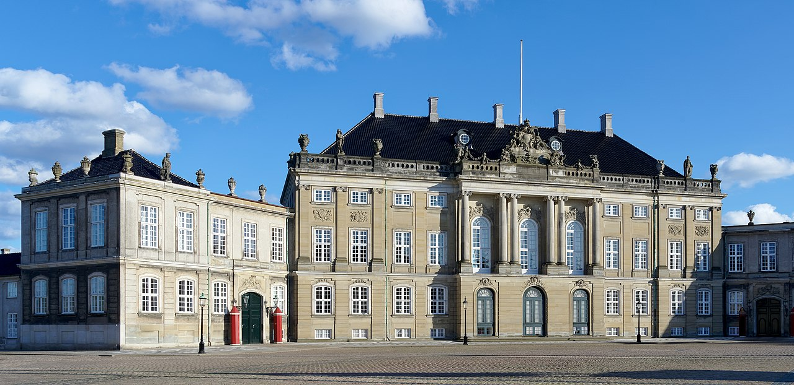
Queen's winter residence of four identical palaces around equestrian statue of Frederik V.
Planned after Christiansborg fire; royal family adopted the square in 1794.
Working monarchy hub facing the opera across the harbour.
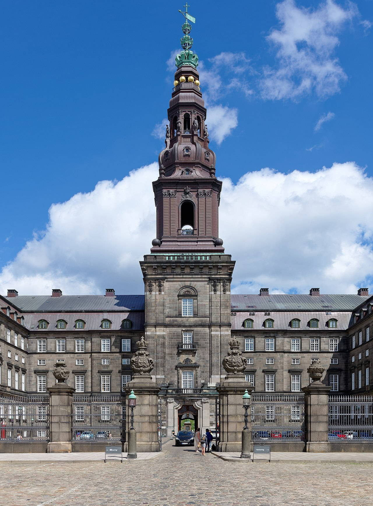
Island palace housing Folketinget, royal reception rooms, and ruins of medieval bishops' castle.
Two earlier palaces burned; Thorvald Jørgensen's design reused foundations.
Rare single site bundling all three Danish powers.
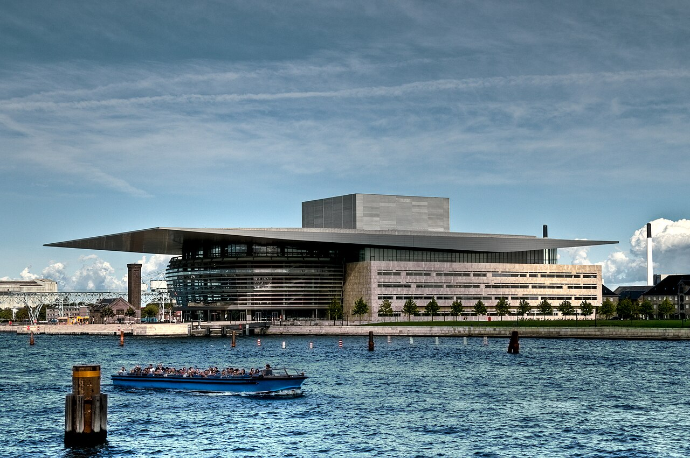
National opera across the harbour from Amalienborg with a cantilevered roof and public foyer walks.
A.P. Møller foundation gift anchored Holmen's cultural redevelopment.
Modern counterweight to historic palace axis.
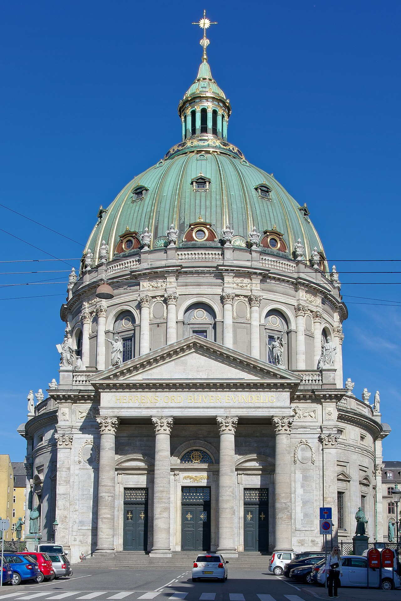
Copper-green dome church facing Amalienborg axis, inspired by St Peter's proportions.
Eigtved's expensive marble scheme stalled for a century before completion.
Visual closure at the end of the Frederiksstaden axis.
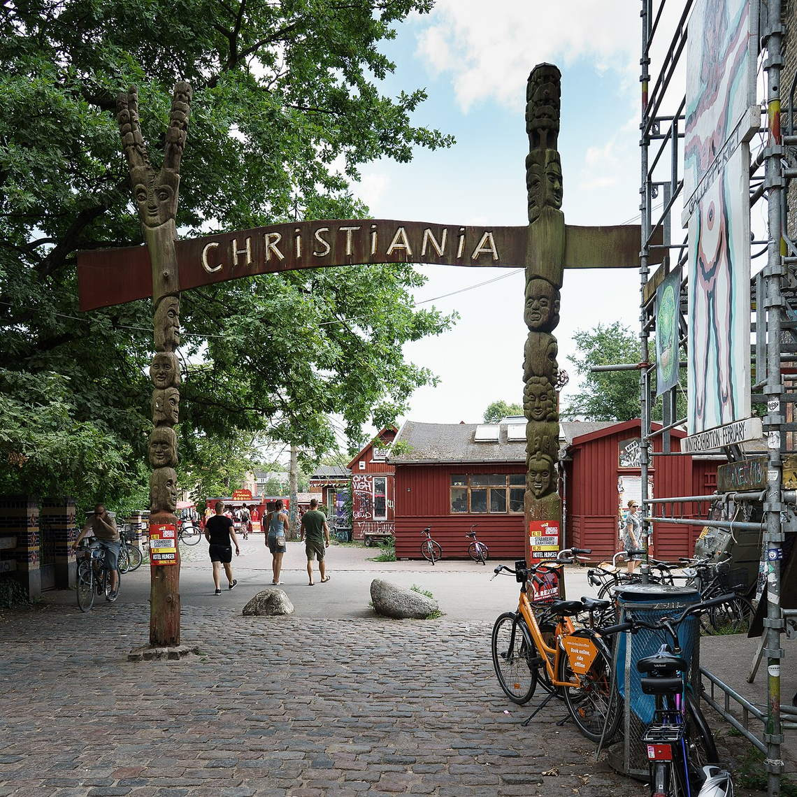
Car-free commune of workshops, vegetarian eateries, and lakeside paths on former barracks land.
Activists opened fences to artists and dropouts; decades of negotiation followed.
Europe's best-known autonomous neighbourhood experiment.
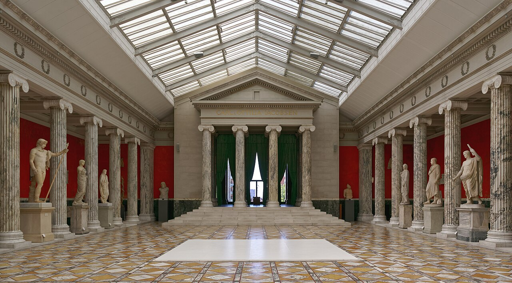
Brewery heir's gift of antiquities and French sculpture centred on a glass winter garden.
Carl Jacobsen funded successive wings to house expanding casts and marbles.
Mediterranean sculpture meets Copenhagen civic pride.
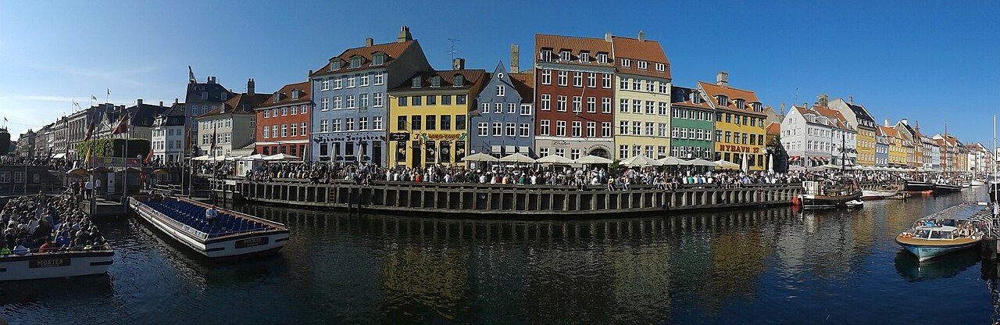
Harbour promenade of cafés and canal boats; house #20 marks Hans Christian Andersen's lodgings plaque.
Digging a back-port for Kongens Nytorv created a sailors' strip later gentrified into tourism spine.
Copenhagen's postcard human scale beside taller Amalienborg axis.
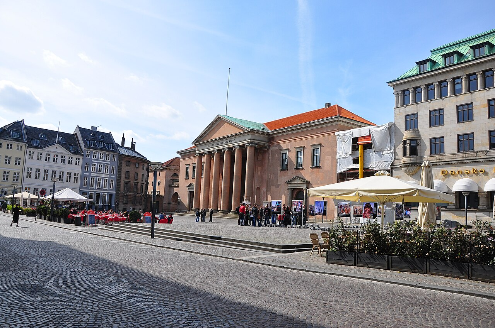
Twin squares where the old city hall stood; today court building arcades and café terraces.
Public punishments once drew crowds; modern use is overwhelmingly civic and social.
Legal heritage façades amid shopping traffic.
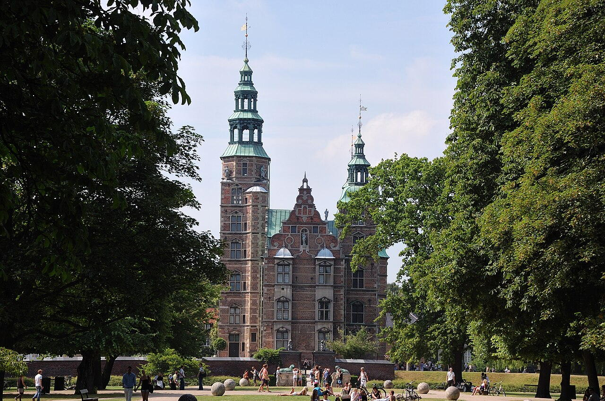
Royal treasury of crowns and ivory narwhal throne in compact turreted palace surrounded by King's Garden lawns.
Christian IV's pleasure house became a museum of absolutist regalia under later constitutional kings.
Best single-room encounter with Danish golden-age craftsmanship.
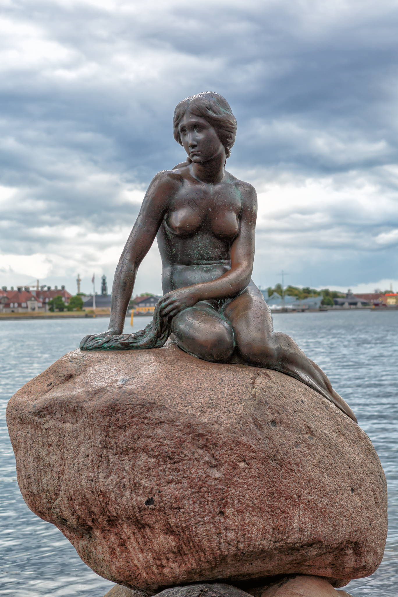
Small bronze based on Andersen's tale, endlessly photographed despite its modest size on the cruise-ship walk.
Brewer Carl Jacobsen commissioned the figure after seeing a ballet adaptation of the fairy tale.
Denmark's most polarising 'must-see' minute sculpture.
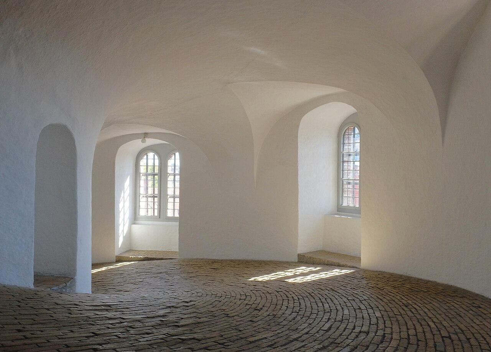
Equestrian spiral ramp leading to a platform observatory and library hall—no stairs until the final lantern ladder.
Christian IV's astronomical tower supported Tycho Brahe's instrument legacy in university orbit.
Europe's oldest functioning observatory structure still open to casual climbs.
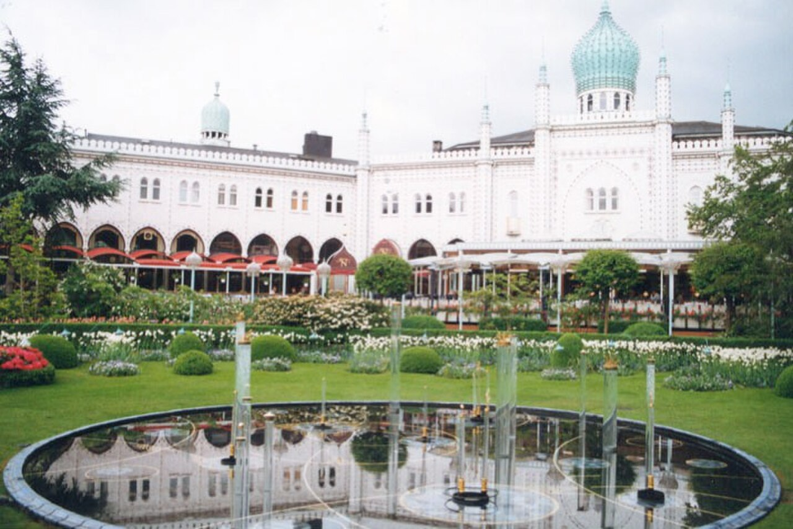
Seasonal amusement park with wooden coaster, Friday fireworks, and concert hall hosting pop and classical bills.
Georg Carstensen persuaded Christian VIII that 'when people amuse themselves, they forget politics'.
Walt Disney cited Tivoli as an inspiration for Disneyland's mix of gardens and rides.